Although the word "fog" may conjure up images of the infamous weather in London or San Francisco, fog in game engines is not just for dense, obvious fog that typically gathers close to the terrain or above water. A small amount of global fog is necessary to provide what's called a "distance cue" - a real-world phenomenon present on planets like Earth that have atmosphere. "Distance cue" refers to the way everything ends up looking more and more like the atmosphere the farther away it is, simply because there is more atmosphere between you and what you're seeing.
This animated image illustrates the distance cue effect: the global volumetric fog's Global density is toggled between a value of 0 and .1. At 0, the tones in all of the trees look the same, no matter how far away, but as soon as even a little fog is enabled, the trees become increasingly fog-colored the farther away they are, catching the warm sunlight. (The camera's FOV is set to 10° to compress the sense of distance and highlight the distance cue effect.)
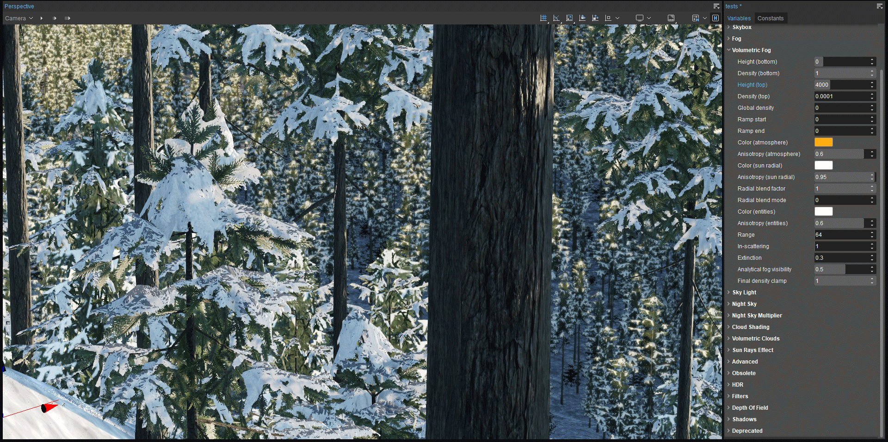
To see further evidence of why fog is needed to provide this distance cue, try turning off fog completely: just type e_fog 0 in the Console. Everything is equally rendered no matter how far away, like early, flat shaded video games. (E_fog 1 will enable fog again.) Thus if your goal is to create a world similar to the one we know, you'll want to use at least a small amount of fog, and have its density attenuate (diminish) as altitude increases. On the other hand, if your game is set on the moon or other body with no atmosphere, e_fog 0 will help create a very convincing simulation!
Light Scattering Relative to Camera and Sun Height
In this image, the camera is placed at 50m altitude (over a default ocean height of 16m and terrain at 32m) looking directly at the sun. The sunlight scatters quite a bit through the default fog because the camera is close to the terrain where the fog is most dense (see the settings), so we're viewing the sunlight through dense atmosphere.
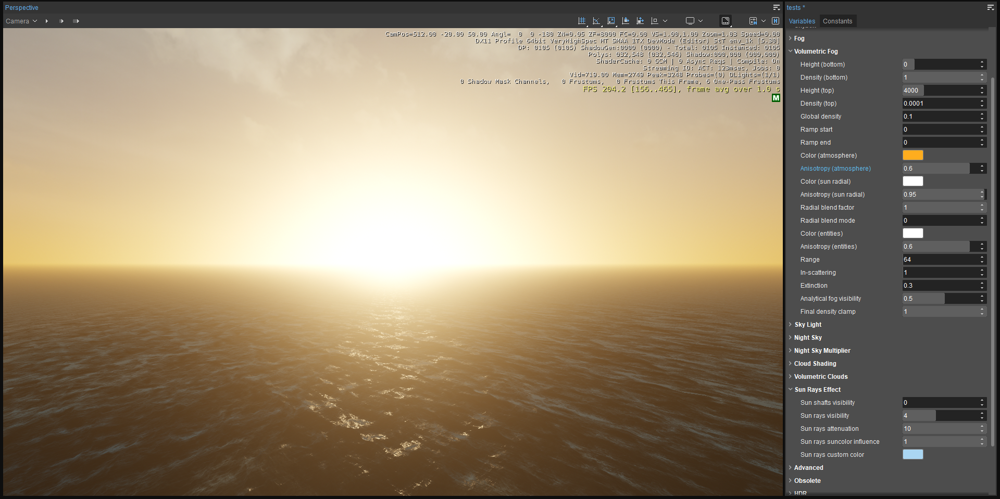
In this next image, the camera has simply been moved up to a height of 4000m - yet that same sun now looks very different simply because we are no longer viewing it through dense fog. Thus we see the sun's orb sharply defined, with little atmosphere to scatter light around it.
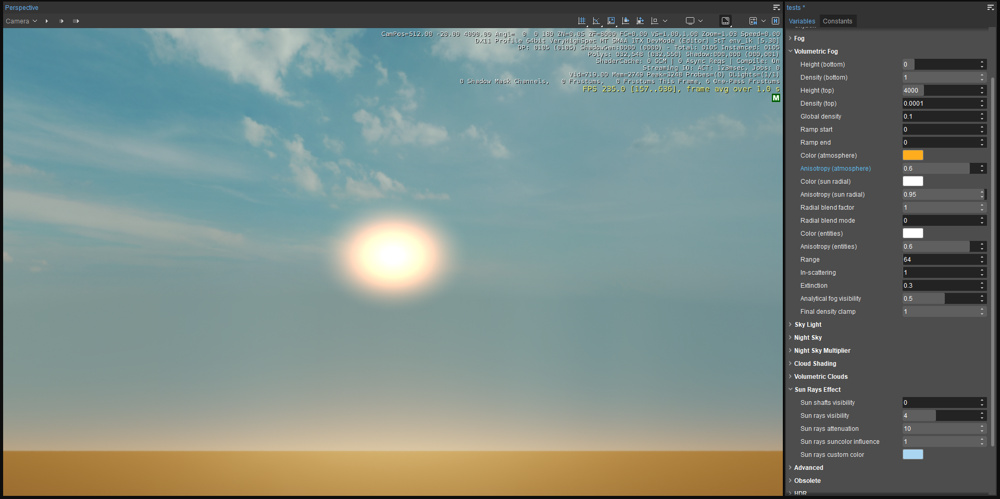
You control the height of both the bottom and top of your global fog or volumetric fog range. If Earth-like realism is not your goal, you could even position the global fog at any height range up to 30,000m on the Z axis.
Fog and Sky
The atmosphere around the Earth contains dust, water vapor, oxygen, nitrogen and other elements, pollen, solid particles of various sizes, pollution, etc. It's most dense closest to the surface, thinning as altitude increases. That atmosphere catches about 23% of the sunlight that hits Earth, scattering and trapping it in the atmosphere and creating the appearance of a sky. By contrast, if you were on Earth's moon or another body with no atmosphere, you would only see the blackness of space and its stars.
While fog in CRYENGINE does contribute to the appearance of the sky, depending on density, color, and height relative to the camera, the environment editor's Sky Light variables provide a mechanism dedicated to controlling light scattering for that purpose.
Fog vs. Skylight in the Apparent Sky
If your game allows the player to fly far above the terrain into orbit, then you might want to keep your sky black and starry. And just as in the real world, you can still make the sky appear blue when viewed from the terrain by using fog to scatter sunlight (although you might want to extend the top of your global fog bit higher than the default 400m for the old fog effect or 4000m for volumetric fog). Here are the settings:
- Set Sky Light → Sun intensity multiplier to 0 to make the sky black (or a very small value to make the sky dark but preserve the sun's orb)
- Turn up Night Sky → Star intensity.
- Adjust Fog or Volumetric Fog → Height (top) to a higher number if desired.
- Move the camera from the terrain straight up until you're above the fog's upper limit.
- Just as you would when flying a rocket into orbit, you'll see the sky change from blue (the fog color) to the black (the sky color) filled with stars.
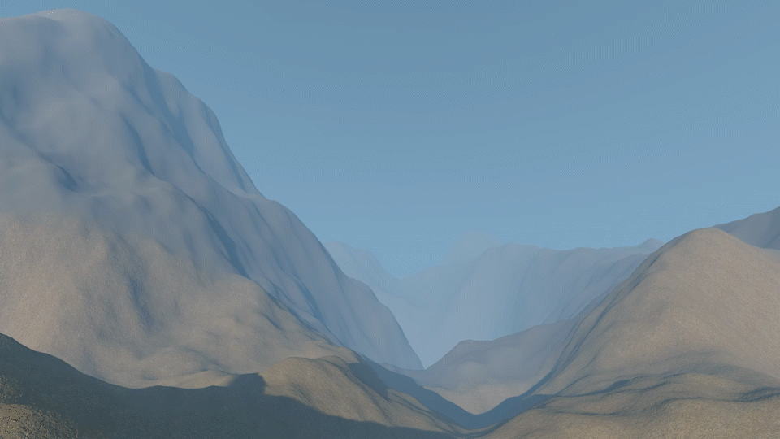
The lesson here is that what you perceive as the sky when standing on the terrain is affected by the fact that you're viewing it through the specific wavelengths of light scattered in the fog. The closer the camera is to the bottom of the global fog effect (0m by default), the more Fog → colors and Fog → radial color will affect what you ultimately perceive as the sky, even if Sun intensity (lux) and Sky Light → Sun intensity multiplier are set to 0.
Otherwise, it should be noted that setting up your environment to have a black sky above the fog is not a recommended workflow for ideal daylight skies; keep your Sky Light → Sun intensity multiplier high enough to produce a normal daytime sky look.
Volumetric Fog vs. Fog
It's highly recommended that you use volumetric fog instead of the old, simple fog effect. Volumetric fog is voxel-based, and provides considerable advantages.
Volumetric fog is off by default; enable it in the Sandbox editor with e_volumetricFog 1 in the Console, or on game or editor start by putting it in your autoexec.cfg file. It's important to note that when you enable volumetric fog, the old Fog parameters no longer have any effect. (However, if you have SVOGI enabled with Sky Color Multiplier > 0, the Fog → Color (top) will have an effect. See the SVOGI page or part three of this tutorial series for details.)
For the most part, you'll recognize variables that work much the same between fog and volumetric fog. The following section details volumetric fog settings.
| Variables → Fog settings | Variables → Volumetric Fog settings |
|---|---|
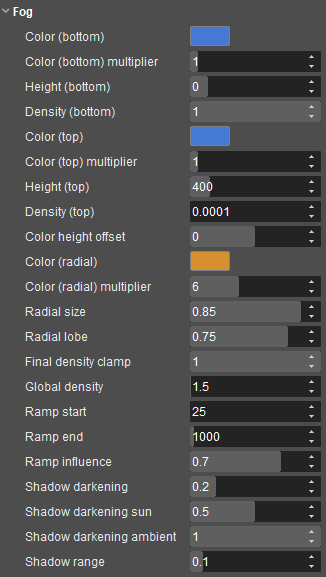 | 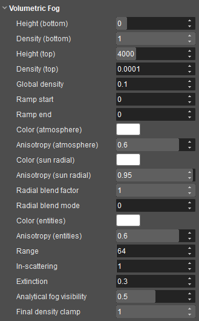 |
Global vs. Local Control Over Fog Volumes
Not only does e_VolumetricFog = 1 enable global volumetric fog, it also allows you to use volumetric fog volumes locally throughout your level (Create Object → Component → Effects → Fog Volume). Note that while you can place fog volumes whether or not volumetric fog is enabled, they won't work properly until you enable volumetric fog in the Console.
If you drag a fog volume into your level (Create Object → Component → Effects → Fog Volume) and look at its properties, you'll notice that it has many controls that don't appear in the environment editor (soft edges, height falloff, density noise, etc.) - and vice versa. In fact, some of the Environment Editor's volumetric fog settings affect both global and local fog volumes, while some affect just one or the other, as shown below.
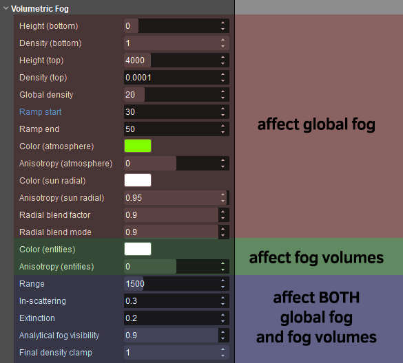
Like Fog → Color (radial), the albedo color of the fog around the sun is controlled through Volumetric Fog → Color (sun radial).
While the old Fog effect provides separate swatches for top and bottom colors, Volumetric Fog controls the albedo color of the global fog through a single swatch: Color (atmosphere).
What's not immediately apparent just from looking at the volumetric fog controls are its significantly more sophisticated features over the old fog effect. See its page in the documentation for full details.
Since the recommended workflow is to use volumetric fog, and you've already been introduced to the key properties of the old fog effect, from this point forward, we'll exclusively look at the best uses of volumetric fog. Make sure volumetric fog is enabled and SVOGI (Environment Editor → Constants → Total Illumination → Active) is disabled.
Global vs. Individual Control Over of Fog Volume Albedo Color
Any properties of fog volumes that aren't controlled through the environment editor are controlled directly through each fog component using the Properties panel. For example, albedo color can be set globally or locally using each fog volume's Options → Use Global Fog Color property. Enabling it will illuminate and color the fog volume using the global Environment Editor → Volumetric Fog → Color (entities) setting as well as the color and the intensity of your sunlight. This is convenient in cases such as having many fog volumes whose colors you want to synchronize through this global setting.
Disabling Use Global Fog Color will allow that fog volume to control its own albedo color through its Color property. Setting this color property does not make the fog emissive; it simply sets the color that can only be revealed by external light sources. You can prove this to yourself if you turn the sunlight intensity to 0 - the fog volumes disappear.
Keep in mind that if you set this color property to have no color saturation, your fog volume will be determined only by the color of any light that strikes it (sunlight, light components, ambient light). As soon as you start to raise the saturation of a fog volume's color above zero, that color is mixed with the effect of light. So the more strongly you saturate a fog volume's color property, the more you are overriding the effect of lights (inasmuch as the color you choose is different from the color of any lights. This provides flexibility, but it also lets you set up fog volumes in a way that aren't realistically affected by light sources.
Here's a series of examples to clarify how this works. In this first example, we've simplified things by making the color of the sunlight and default color of fog volumes (Color (entities)) pure white. The global fog albedo color - Color (atmosphere) - has been set to a saturated green to make it obvious; you can see It along the horizon to the left. Notice that the green Color (atmosphere) has no effect on the local fog volume placed in the valley foreground, since its Use Global Fog Color property has been enabled.
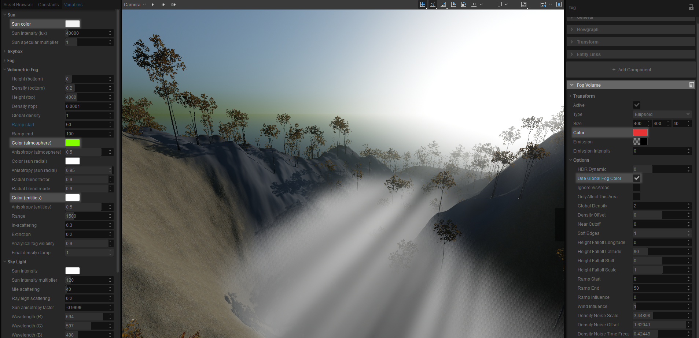
In the next example, the setup is the same, but the color of the sunlight has been made a more typical warm orange. This affects both the global fog and the fog volume, since its Use Global Fog Color property is still enabled.
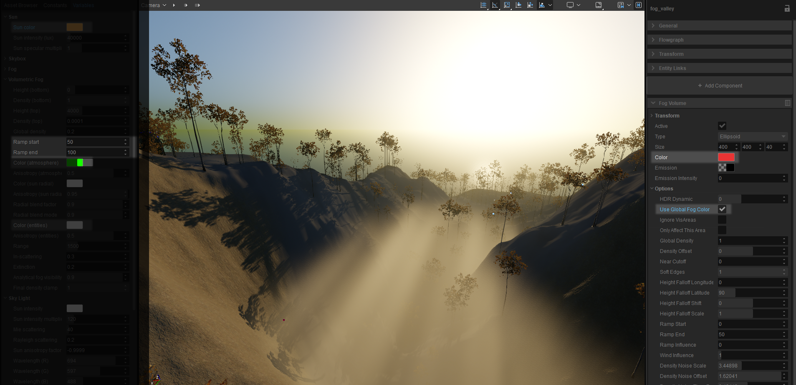
Here, a neutral grey color has been set as the fog volume's color, allowing the sunlight to determine its color, but still affecting its luminosity; compare its luminosity to the previous example. (The Use Global Fog Color property of the fog volume, hidden in this screen shot, is still disabled.)
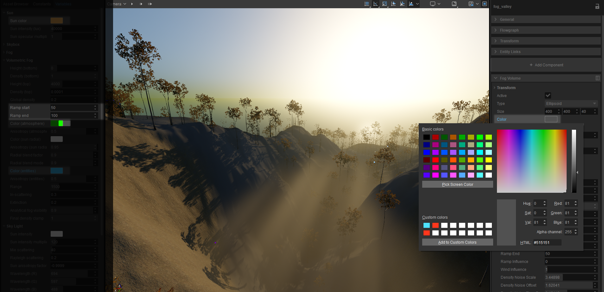
In this example, the Environment Editor's Color (entities) property has been used to tint fog volumes cyan, provided they (like the one shown) have their Use Global Fog Color property enabled.
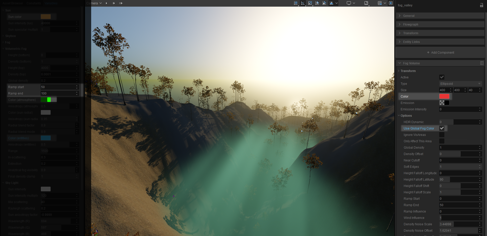
Next, the Use Global Fog Color property of the fog volume has been disabled, allowing its Color property to set its albedo color to red in this case. Because the red is quite saturated, it overpowers the effect of the sunlight's color on the fog volume.
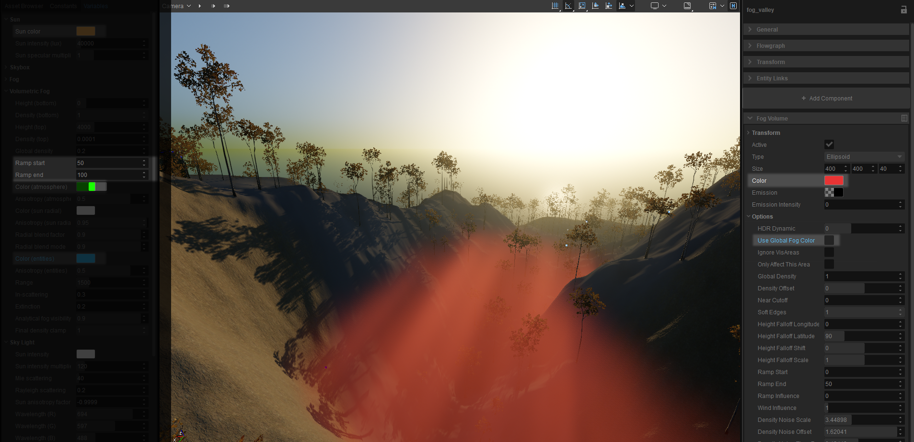
Emissive Fog
If you do want your fog to glow instead of depending on external light to illuminate it, then you’ll need to bring up your Emission Intensity - a very small value, like .01 or less, will have a big effect - and you need to click on the Emission swatch and set the luminance to something greater than zero. In truth, this acts like a light switch: 0 is off, and anything higher than 0 is on.
Voila, your fog is glowing. But notice that it’s white (or the color of any light sources striking it), not what you set with the Color property. The Color property only determines the albedo color, and you can only see that when an external light source reveals it (i.e., is scattered in the fog).
In fact, the emissive color is completely independent of the albedo color. If you drag up in the Emissive swatch's color picker to add some saturation, you'll see that you actually have separate emissive and albedo colors.
You may notice that the Emission swatch seems to act a bit strange in that even after you pick a color, it may still show a black swatch. That’s because the swatch appearance is also affected by Emission Intensity. If you bring that up, the swatch reflects what it considers to be the emissive color more accurately. But at very low intensities, it tends to look black even though that’s not how the fog actually looks.
Volumetric Fog Vertical Range
Start with the default values in Environment Editor → Variables → Volumetric Fog. Height (bottom) should match the lowest point on your terrain. Usually you'll want Density (Bottom) to be 1 (100%) and Density (Top) at 0 to attenuate your atmospheric density with height. You can set just how dense your global fog is by tweaking the global density and Height (Top): a lower height will work for dense fog, while a higher top creates lighter effects.
Global Fog and Interior Spaces
Fog volumes can be confined within clip volumes, so you could, for instance, use a fog volume to place a fog volume only inside a building (which probably only makes sense as a smoke effect, like a smoky bar, although that's probably better done with a particle effect). However, one of the challenges is that there is nothing you can do to exclude the global fog from appearing indoors, not even with clip volumes.
Depending on the size of your interiors, there is a certain degree of control over this by tweaking the Ramp Start and Ramp End properties of the global volumetric fog. This controls at what distance the global fog begins to appear (Start), and at what distance from the camera it reaches full (global) density (End). So if your Ramp Start is set to 50m and your building's largest open space is 50m or less in its longest dimension, you're not going to see any global fog, even if you stand at one end of the building and look all the way across it.
However, this is more useful only for underground buildings or those without windows, since it doesn't solve the problem of the fog appearing inside the building when you look into it from the outside. Once the camera moves farther away then the Ramp Start distance, fog will start to appear inside the building.
Here are examples using the hangar from the free GameSDK assets. The hangar is about 32x20m, and the camera has been positioned in a far upper corner looking all the way across the hangar and outside. The global fog has been set to a very obvious, dense green color. In this first example, Ramp Start begins revealing fog at a distance of 15m, Ramp End bringing fog to its full density at 30m. As a result, some fog is visible in the far end of the building.
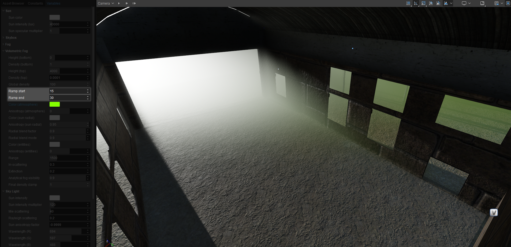
In the second example, the ramping has been set to prevent any fog closer to the camera than 30m, ramping up to full density at 50m. This effectively keeps the global fog from appearing within the hangar.
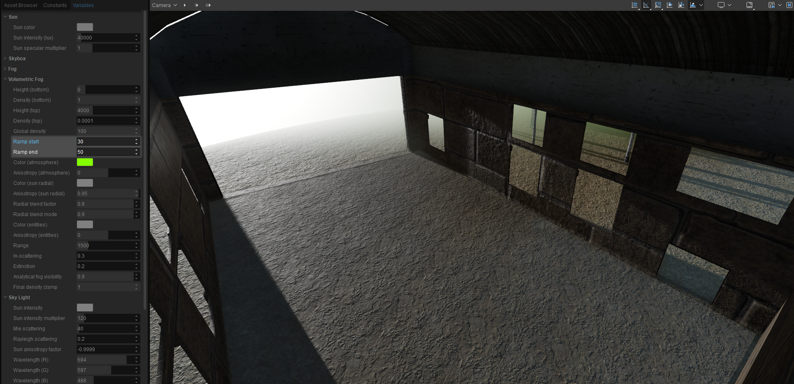
Finally, here's the problem that remains unsolved: using those same settings, the fog starts to appear inside the building as the camera moves away from the building past the Ramp Start distance.
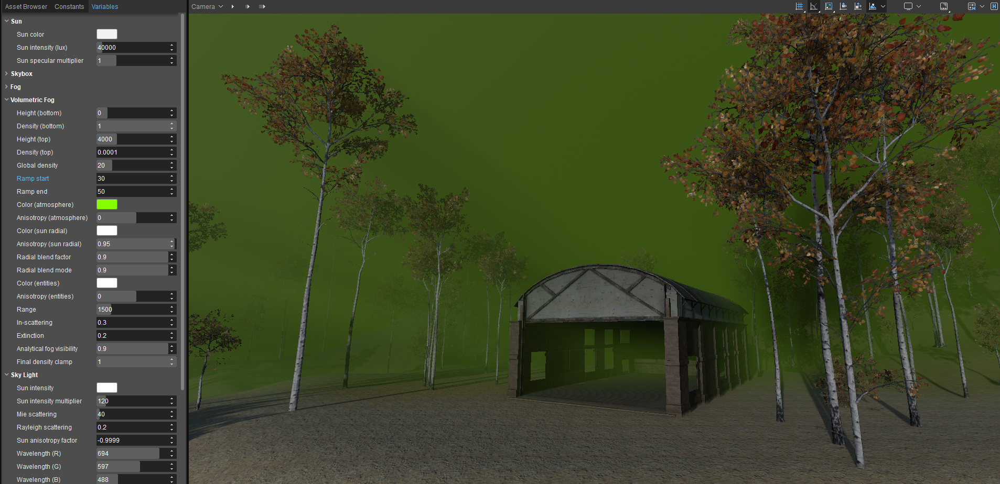
And of course for buildings with rooms larger then the Ramp Start distance that looks good for exteriors, this is no help at all.
So the recommended strategy is to keep your global fog density low enough to serve as a distance cue over larger outdoor distances, place various fog volumes throughout your level but exclude them from interiors by placing clip volumes inside your interiors, keeping the Options → Only Affect This Area property enabled on any exterior fog volumes, and keeping the pivots of all fog volumes outside the clip volumes to exclude them from the interiors. See the clip volumes page for details.
Anisotropy
"Anisotropy" means how direction-dependent light scattering is. Visually, that determines at which angles relative to the direction of the light itself you'll see the scattering in the fog.
Setting Anisotropy (sun radial) to 0, for example, will eliminate direction dependency, scattering sunlight evenly 360° around the horizon line. Setting it to -1 will concentrate it in a very strange sun-sized disc on the opposite side of the sky from the sun itself (i.e., backwards facing) - odd, and probably not very frequently useful. What is useful to know is that the closer this value is to 1, the more the size of the scattering gradient will coincide with the sun orb's position and size itself, although setting Anisotropy to 1 will make scattering coincide with the position of the sun itself (forward facing), effectively making it disappear. Below are some visual examples.
The Volumetric Fog settings provide anisotropy controls for two different kinds of scattered sunlight:
- Anisotropy (atmosphere), whose color can be controlled by Color (atmosphere)
- Anisotropy (sun radial), whose color can be controlled by Color (sun radial)
In addition, Color (entities) + Anisotropy (entities) controls direction-dependency and the albedo color of fog as illuminated only from light components.
To finalize the look of your light scattering, you'll want to experiment with Radial blend mode (how atmosphere and radial scattering are blended together), and Radial Blend Factor (a multiplier, effectively).
Anisotropy (sunlight) Examples
In the examples below, the sunlight color has been set to white, Color (sun radial) has been set to a very saturated orange color and Color (atmosphere) has been set to black so you can see the scattering of Color (sun radial) clearly in isolation. In this first example, Anisotropy (sun radial) has been set to .5, scattering the color set by Color (sun radial) fairly widely around the horizon.
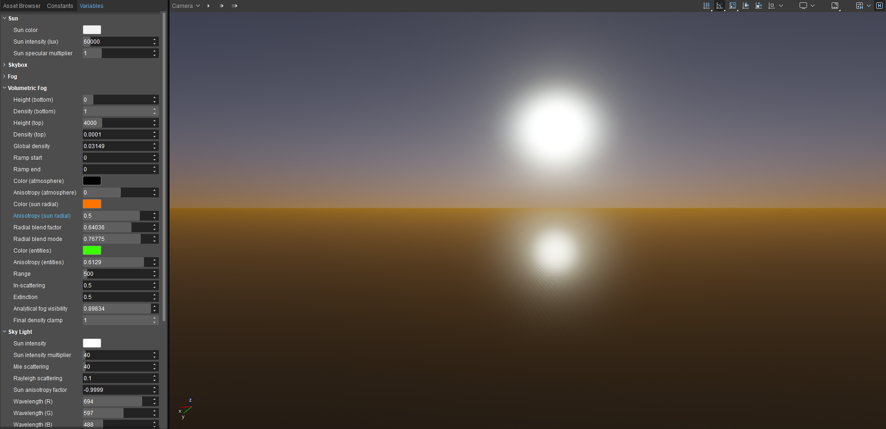
Next, Anisotropy (sun radial) has been set to .9, tightening the scattering of Color (sun radial) noticeably closer to the sun.
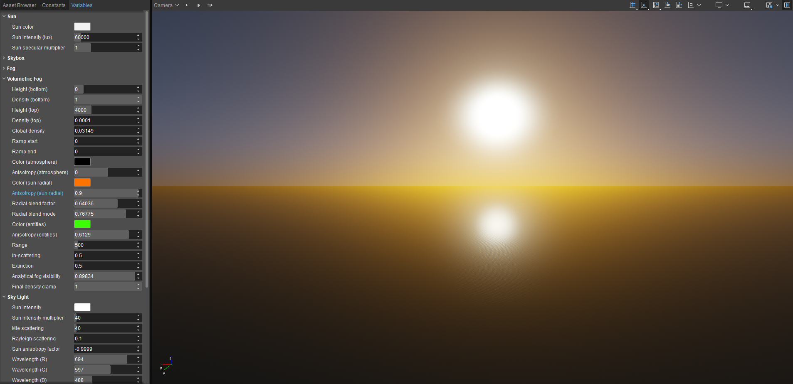
Next, Anisotropy (sun radial) has been set to .99, a small change that nevertheless has had an exponential effect on tightening Color (sun radial) around the sun.
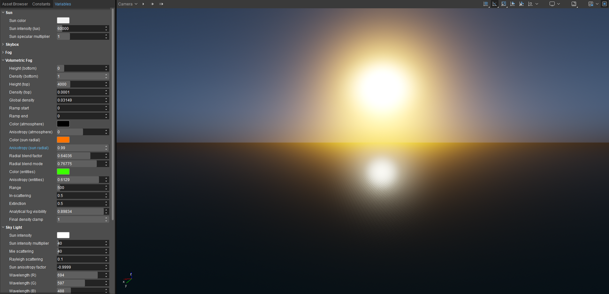
Finally, Anisotropy (sun radial) has been set to 1, effectively making Color (sun radial) disappear completely.
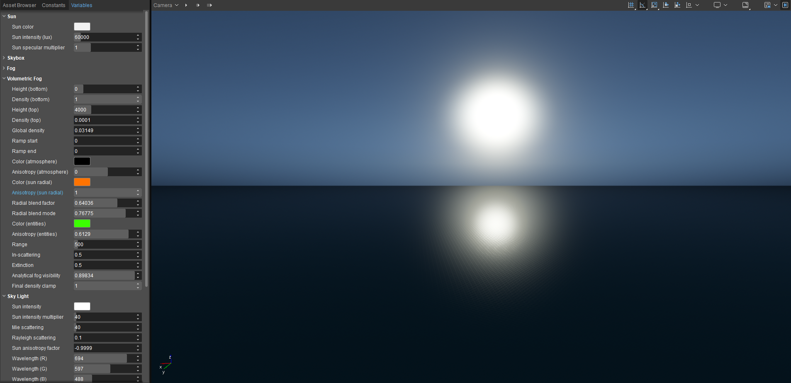
Anisotropy of Fog Volumes vs. Sunlight
Anisotropy (entities) works the same way, but it only affects how direction-dependent scattering of light in fog volumes is. For example, setting Anisotropy (entities) to 0 will insure that a fog component will scatter light evenly in all directions.
In-Scattering
The overall level of light scattering. Setting it to zero eliminates all scattering, effectively making all fog invisible.
Final Density Clamp
Ultimately can be used to set the limits of the sum effect of all of the fog settings by limiting its effect from 0 (completely invisible) to full strength (1 or 100%).
Use these last two parameters with caution and thorough testing, as they will greatly affect how all entities interact with your fog.
Range
This will need to be at least as big as your fog volume component's maximum Transform → Size in order to see it in its entirety - for example, if the player is ever going to have a high vantage point where they can see an entire valley filled with fog.
Fog Voxelization
At the default values, you're likely to notice the voxelization when using volumetric fog. It looks a bit like old analog TV static, as seen here, with r_VolumetricFogTexDepth = 8 and r_VolumetricFogTexScale = 50:
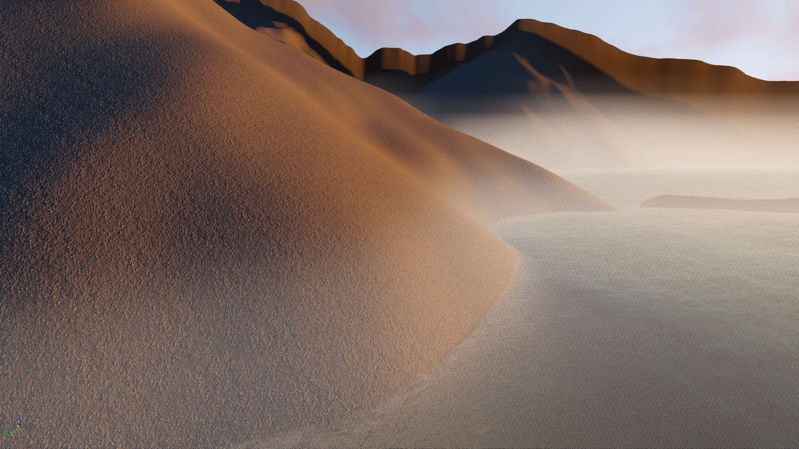
You'll want to tweak the voxelization, which you can do with the following cVars:
r_VolumetricFogTexDepth: specifies the number of samples. Higher values will produce smoother, less voxelized looking fog. Values above 200 will be unstable and provoke crashes; recommended values: 32-180.
r_VolumetricFogTexScale: Controls the size of those fog samples. Lower values produce sharper fog and fog shadows. Values below 3 become exponentially more expensive and unstable. Recommended values: 6-15.
Here's the same scene with r_VolumetricFogTexDepth = 120 and r_VolumetricFogTexScale = 8:
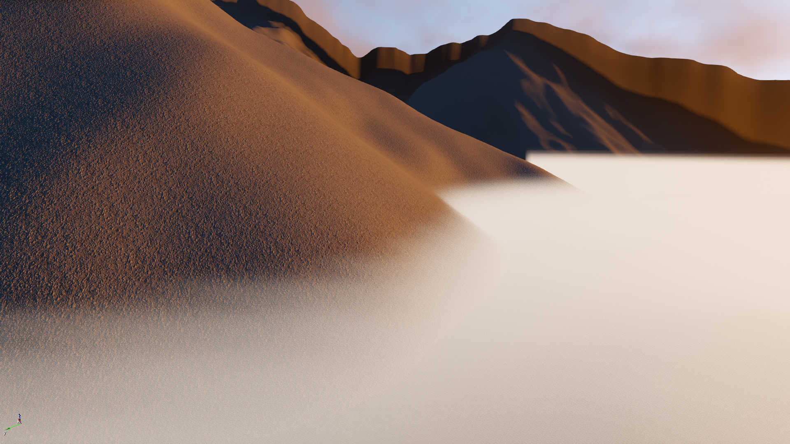
We've talked about the three key aspects of environmental lighting: the sun, the sky, and fog. However, we are far from done; there are additional considerations that you'll need to set up. In the subsequent parts of this tutorial series, we'll look at how to add ambient light using environment probes and SVOGI, look at volumetric clouds, HDR, and some other settings, and finally, bring it all together in a series of downloadable use cases that cover realistic and purely fantastical looks.
Additional Tips
- Since fog components have no bounding box, you can easily see their limits to facilitate positioning and sizing them precisely if you temporarily increase their density and emissive intensity.
- Always place interior fog components inside clip volumes. Since the clip volume ultimately determines the bounds of the fog volume, the fog volume can be made slightly larger than the building to insure that it reaches all corners (useful since buildings are not necessarily simply boxes nor ellipsoids like fog volumes themselves). However, to maximize performance, don't make the fog volume larger than absolutely necessary.
Video Tutorial
This tutorial is also available as a video on our YouTube channel: